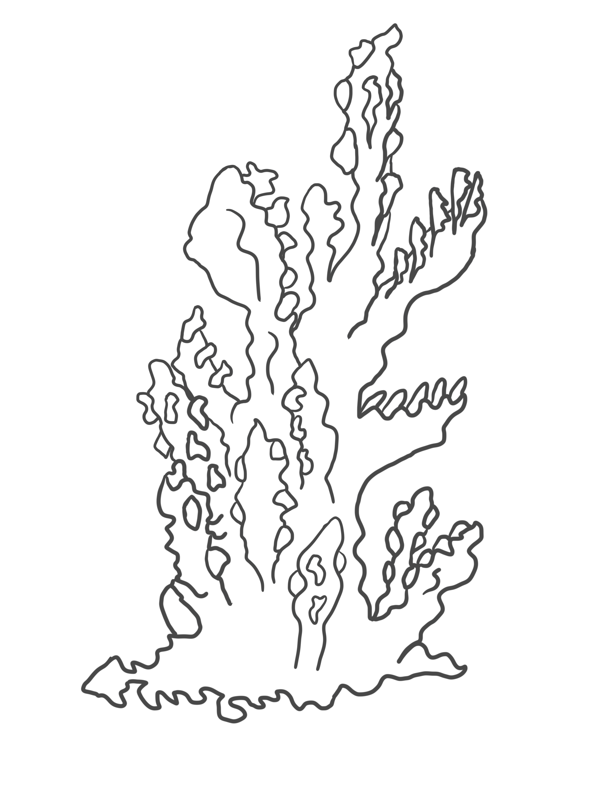
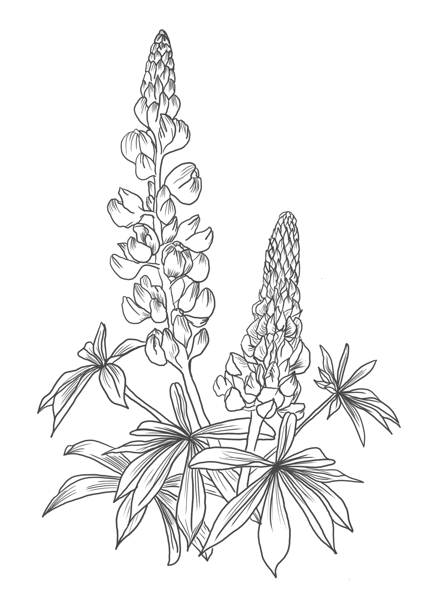
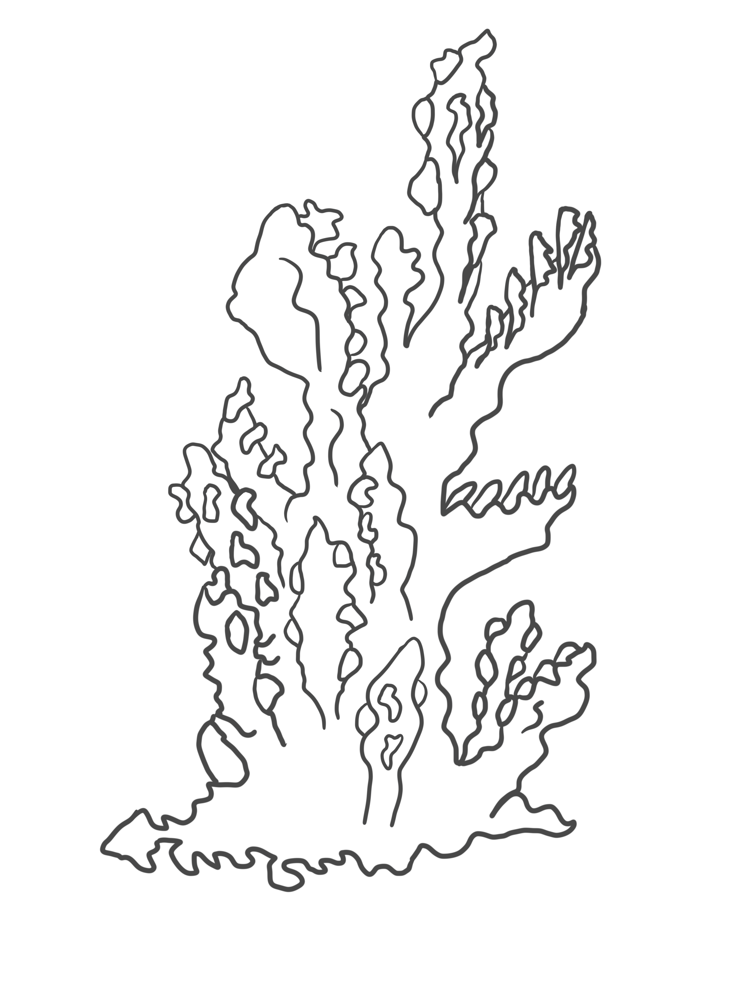
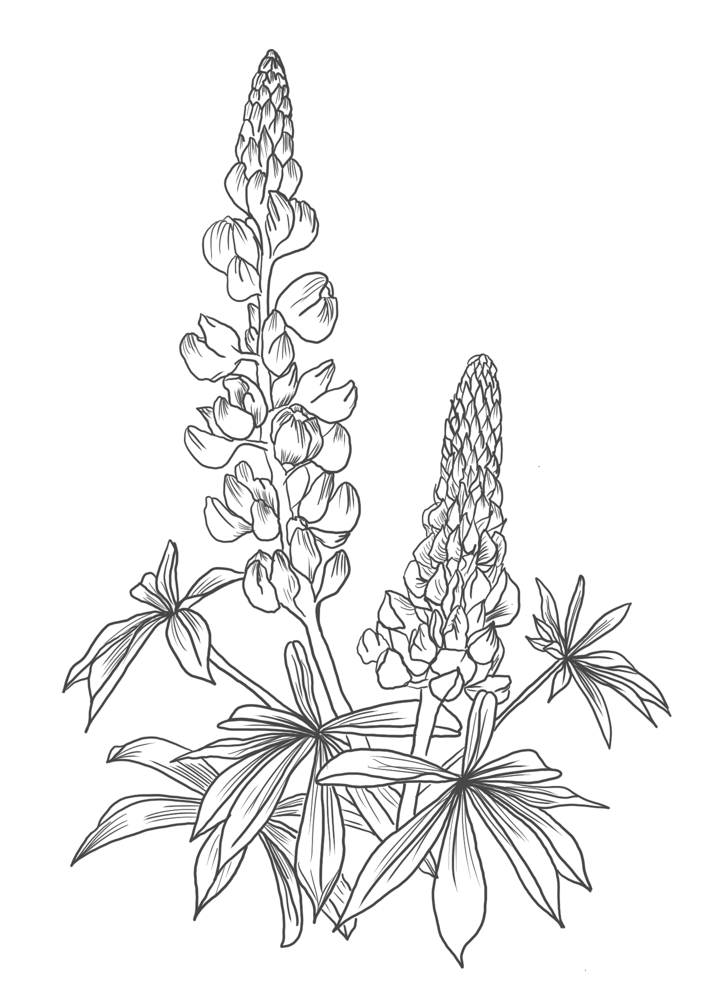

MARTYNA
So, do you know what's on this picture or you don't remember at all?
Uh, I remember what is here, and I think I kind of remember also what this picture was but let’s talk about these uncreated beings first.
Okay, so this one is the first picture that you want to place there?
Yes, it's the, nitrogen generator. Project from Mars. To make a soil full of nutrients. To give people an opportunity to start to grow the plants there and live there.
So that's the project from last year?
Yes, this is from last semester.
Do you think that you will ever get back to the project? Or do you think it is finished?
Uh, I don't think it's finished. I think it's a super interesting topic to consider - habitat on Mars. Mmhmm. So probably I would like to come back for this if someone will be able to pay me for that. Uh, otherwise, I don't think so. But who knows.
You mean like Elon Musk with Space X?
A million people don't have water, eight people rule the world. Not really. I think just the idea of taking humans to cosmic space is quite interesting, so it doesn't really have to be on Mars. On the other hand, we destroyed one planet and we want to explore another one. So it's like, uh, about humans that we always want more of everything.
So the color of the soil is that it looks like red, is that the color of Mars?
So yeah, it's the color of Mars. (Probably.) But I think the picture is from Nevada.
And the second picture ?
It's my, project from, first semester. It was part of the postfishing scenario. The pictures are from a microscope. It was algaes in high magnification. It was a good setup. I researched the fishing industry in Iceland a lot and came across a bit of information from around the world. The statistics are terrifying. If we maintain the current state of fisheries, there will be no fish in the ocean by 2048. In the "postfishing" world, we are beginning to see the ocean again as a place for many species to live.
Do You have other things to show?
Uh, yeah. I also have some thesis attempts.
Is it a project that hasn't yet found an object that represents it?
Yes the work is still in process. I just want to show the video from the outside herbal baths.
Is it from the workshop?
Yes. My master's thesis will be about the use of phytotherapy in the context of supporting the menstrual cycle. What is also important to me is the context of the patriarchy, which has a huge impact on us, regardless of our origin. It also has a real reflection on our health. I would like to show that menstruation is a topic that can be celebrated instead of being ashamed of it. Also encourage various forms of self care with the active participation of nature.
So, were you involved in this?
No, I didn't at that time, because I was sick. I took a bath in June. Basically every day we were sitting in the bath in the evening because the weather was nice and warm.
 


